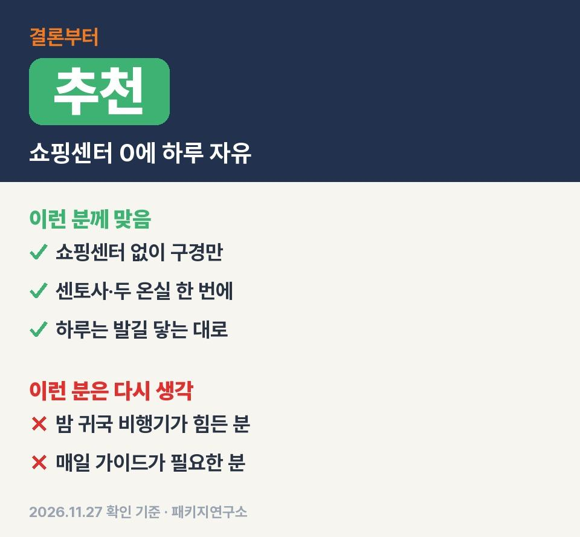
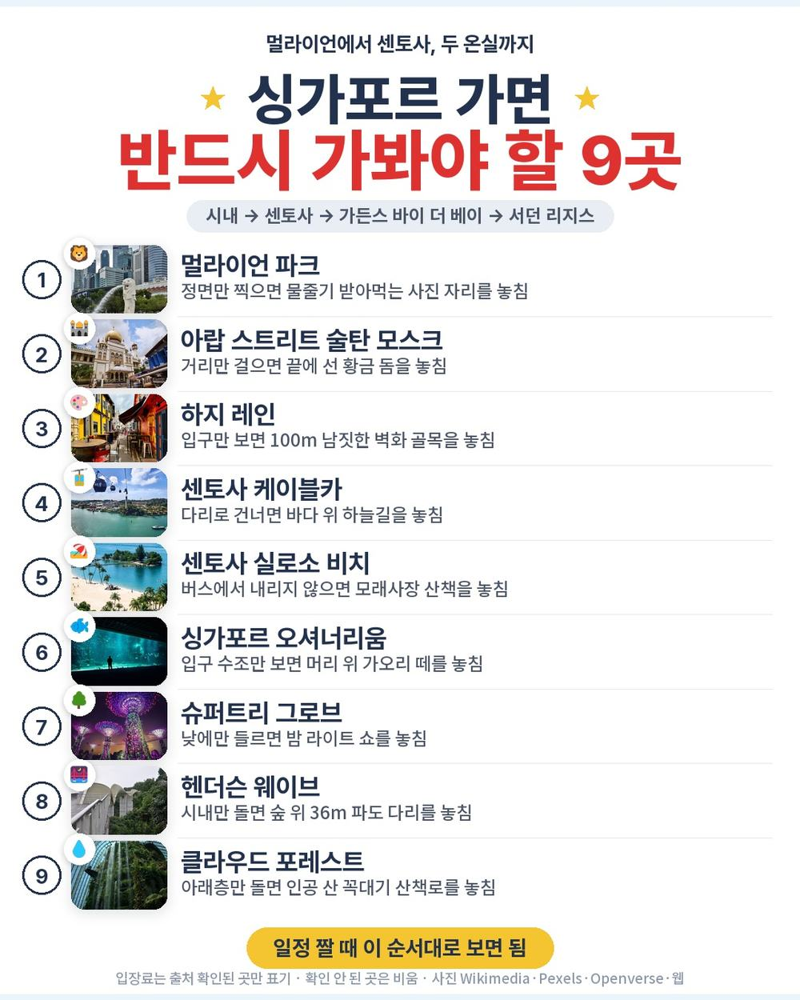
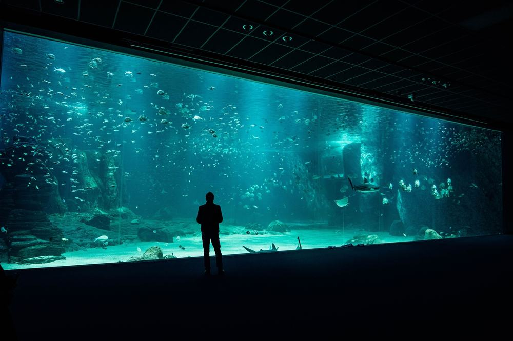
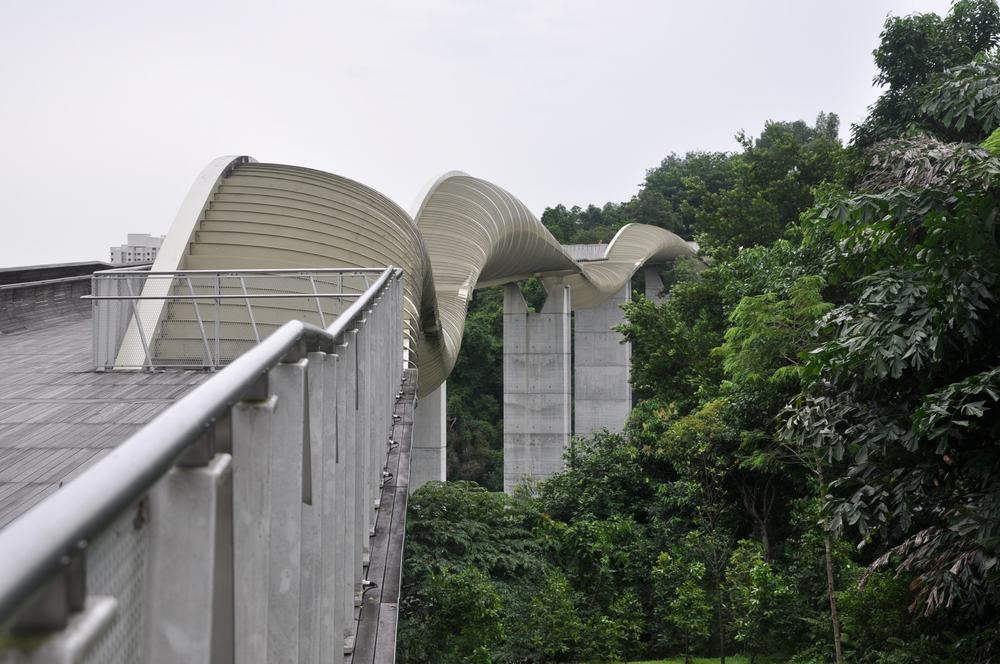

셋째 날 하루가 일정표에 아예 「자유」로 비어 있고, 나머지 이틀엔 센토사 케이블카·오셔너리움·가든스 바이 더 베이 두 온실이 다 들어 있는 3박 5일임.
다녀온 후기가 아니라 하나투어 일정표와 포함·불포함 원문을 하나씩 따져 본 글임.
결론 — 추천. 트리니티항공 직항 왕복(왕복 기내식), 알로프트 노베나 3박, 식사 7번, 센토사 케이블카·실로소 비치·오셔너리움, 슈퍼트리 라이트 쇼, 클라우드 포레스트·플라워 돔, 헨더슨 웨이브가 124만 9,900원 안에 있고 쇼핑센터는 0. 다만 밤 11시 귀국 비행기가 힘든 분은 다시 따져 볼 것.

오늘 기준 출발일별 요금 보기
https://naver.me/G0pupMRr

| 항목 | 내용 |
|---|---|
| 가격 | 1인 1,249,900원 (성인·소아 같음 · 12월 출발 기준) · 2인 2,499,800원 |
| 여행사 | 하나투어 |
| 항공 | 트리니티항공 직항 (TW161·TW162) · 갈 때 인천 15:30 → 창이 21:25 / 올 때 23:00 → 인천 06:35 · 왕복 기내식 |
| 숙소 | 알로프트 바이 메리어트 싱가포르 노베나 3박 (시내 4성급) |
| 일정 | 3박 5일 · 식사 7번 · 쇼핑센터 0 · 선택관광 6개(고르는 것) · 가이드·기사 경비 40달러 별도 |
▶ 내 출발일 오늘 기준 요금 확인 (제휴 링크 · 예약 시 수수료를 받으며 가격은 같습니다)
▶ 11월 27일 기준 싱가포르 패키지 최저 114만 9천원부터 — 출발일별 값 한 화면에: 비교 페이지
같은 일정을 싱가포르항공으로 가는 출발은 1인 114만 9천원으로 나와 있음(11월 27일 기준 · 출발일마다 다름).
| 번호 | 내용 | 한 줄 답 |
|---|---|---|
| 1 | 이 값에 들어 있는 것 | 식사 7번·쇼핑센터 0 |
| 2 | 현장에서 더 낼 돈 | 2인 80달러 |
| 3 | 일정과 체력 | 2일차가 가장 긺 |
| 4 | 자유여행으로 짜면 | 항공값 조회 실패 |
| 5 | 맞는 분 · 안 맞는 분 | 3 대 2 |
직항 왕복에 같은 호텔 세 밤, 식사 7번, 케이블카와 수족관·온실 입장까지 한 값임.
- 항공: 트리니티항공 인천–창이 직항 왕복, 공항세 포함, 갈 때·올 때 기내식
- 숙소: 알로프트 바이 메리어트 싱가포르 노베나에서 3박 연속
- 식사: 7번 — 호텔 조식 3, 스팀보트, 페라나칸식 저녁, 송파 바쿠테, 북창동 순두부
- 관광: 멀라이언 파크, 아랍 스트리트·하지 레인, 센토사 케이블카·실로소 비치·오셔너리움, 부기스 스트리트, 슈퍼트리 라이트 쇼, 서던 리지스, 클라우드 포레스트·플라워 돔, 오차드 로드, 리틀 인디아
- 그 밖: 관광지 입장료, 1억원 여행자보험

호텔을 한 번도 안 옮기는 게 은근히 큼. 캐리어는 첫날 밤 한 번 펼치면 끝임. 페라나칸 저녁은 미쉐린 가이드 더 플레이트에 오른 집으로 잡혀 있음.
꼭 내는 돈은 가이드·기사 경비 1인 40달러뿐이고 나머지는 고르는 만큼 붙음.
| 항목 | 금액 | 필수/선택 | 비고 |
|---|---|---|---|
| 가이드·기사 경비 | 80달러 | 필수 | 1인 40달러 · 성인·아동 같음 · 약 10만 8천원 |
| 3일차 점심·저녁 | 직접 | 선택 | 하루 자유일정 |
| 선택관광 | 0~140달러 | 선택 | 1인 45~70달러짜리 6개 |
| 합계 (2인 필수분) | 80달러 | 상품가 2인 2,499,800원 별도 |
- 스카이파크 60달러, 플라이어+타임캡슐 70달러, 덕투어·윙스 오브 타임 50달러, 리버보트·2층 버스 45달러
- 안 하면 그 근처 자유시간이나 호텔 개별 귀가
- 원화 환산은 1달러 약 1,345원(11월 26일) 기준이라 환율 따라 바뀜
버스 이동은 짧은 편이고 걷는 양이 2일차와 4일차에 몰림.
| 일차 | 가는 곳 | 버스 | 걷기 | 점심 · 저녁 |
|---|---|---|---|---|
| DAY 1 | 인천 15:30 → 창이 21:25 → 호텔 | 공항 이동만 | 적음 | 없음 · 기내식 |
| DAY 2 | 멀라이언 → 아랍 스트리트·하지 레인 → 센토사(케이블카·실로소·오셔너리움) → 부기스 → 슈퍼트리 쇼 | 시내 이동 | 많음 | 스팀보트 · 페라나칸식 |
| DAY 3 | 하루 자유일정 (가이드 없음) | 없음 | 마음대로 | 직접 · 직접 |
| DAY 4 | 서던 리지스 → 두 온실 → 오차드 → 리틀 인디아 → 공항 23:00 출발 | 시내 이동 | 많음 | 송파 바쿠테 · 북창동 순두부 |
| DAY 5 | 인천 06:35 도착 | 없음 | 적음 | 기내식 아침 |
- 2일차는 시내에서 센토사를 거쳐 밤 라이트 쇼까지 가는 가장 긴 날
- 서던 리지스엔 높이 36m 헨더슨 웨이브 다리가 있음
- 4일차는 체크아웃 뒤 밤 비행기까지 일정이 이어짐

이 상품 게시판 후기에도 하루 만 보를 훌쩍 넘게 걷는다는 말과 냉방이 세다는 말이 같이 나옴. 편한 신발이랑 얇은 겉옷 하나는 챙기는 게 맞음.
이 상품 조건 한눈에 (출발일 달력·두 분 값·비슷한 상품과 비교)
https://pkg-lab.com/pkg/ASP211AACF33ED6TW1/?utm_source=ghpages&utm_medium=post&utm_campaign=daily
같은 목적지 다른 여행사 패키지, 쇼핑·선택관광·가이드 경비까지 비교
https://pkg-lab.com/dest/SIN/m/2026-12/?utm_source=ghpages&utm_medium=post&utm_campaign=daily
항공값을 오늘 조회하지 못해 합계는 안 냈고 직접 짤 때 챙길 칸만 적음.
| 항목 | 금액 | 근거 |
|---|---|---|
| 인천–싱가포르 직항 왕복 | 확인 못 함 | 2026-11-27 마이리얼트립 조회 실패 — 숫자를 지어내지 않음 |
| 시내 호텔 3박 | 확인 못 함 | 날짜·호텔마다 다름 |
| 식사 | 따로 | 패키지는 7번 포함 |
| 공항 이동 | 따로 | 패키지는 공항 미팅·샌딩 포함 |
| 케이블카·오셔너리움·두 온실 | 따로 | 패키지는 입장료 포함 |
| 여행자보험 | 따로 | 패키지는 1억원 보험 포함 |
| 가이드 | — | 자유여행은 없음 |
- 센토사·가든스 바이 더 베이·서던 리지스를 하루씩 묶는 동선을 직접 짜야 함
- 이 상품은 셋째 날을 자유로 비워 둬서, 자유여행 맛은 그날 보면 됨
- 실값은 날짜를 정한 뒤 비교하는 게 정확함
걸리는 건 밤 귀국 비행기와 가이드 없는 하루이고 누구에게만 문제인지 분명함.
| 맞는 분 | 안 맞는 분 |
|---|---|
| 쇼핑센터 없이 구경만 하고 싶은 분 | 밤 11시 귀국 비행기가 힘든 분 |
| 센토사와 두 온실을 한 번에 보려는 분 | 매일 가이드가 곁에 있어야 하는 분 |
| 하루는 발길 닿는 대로 걷고 싶은 분 |
하나투어 게시판에 이 상품군 후기가 907개 있고 평균 4.6점, 「일정이 알차요」 키워드가 가장 많이 붙어 있음. 슈퍼트리 쇼와 식물원 돔이 압도적이었다는 글, 중간 자유일이 쉬어 가기 좋았다는 글이 눈에 띔. 객실이 좁았다는 글도 있으니 큰 캐리어 두 개면 미리 각오할 것.
Q. 싱가포르 패키지 가격은 이 상품이 얼마인가요?
A. 12월 출발 기준 1인 124만 9,900원, 2인 249만 9,800원. 출발일마다 값이 달라서 날짜별로 확인해야 함.
Q. 싱가포르 패키지 노쇼핑인가요?
A. 단체 쇼핑센터는 한 곳도 안 감. 오차드 로드·부기스 스트리트는 거리 구경으로 들르는 곳임.
Q. 가이드 경비는 따로 내나요?
A. 냄. 1인 40달러를 현지에서 냄. 성인·아동 같은 금액임.
센토사와 가든스 바이 더 베이를 가이드와 돌고, 셋째 날은 마음대로 쓰는 구성이 이 값의 이유임.
부모님과 싱가포르 대표 명소를 쇼핑 없이 보고 싶은 분께 특히 잘 맞음.
출발일에 따라 값이 달라서 가시려는 날짜 요금부터 확인하시면 됨.
오늘 기준 출발일별 요금 보기
https://naver.me/G0pupMRr
이 글에는 네이버 제휴 링크가 포함되어 있으며, 링크를 통해 예약하시면 일정 수수료를 받습니다. 가격은 동일합니다. 가격과 구성은 2026년 11월 27일 확인 기준이며 출발일에 따라 달라질 수 있습니다.
▶ 싱가포르 패키지 오늘 값 나란히 비교
▶ 같은 목적지 다른 여행사 패키지, 쇼핑·선택관광·가이드 경비까지 비교: pkg-lab.com